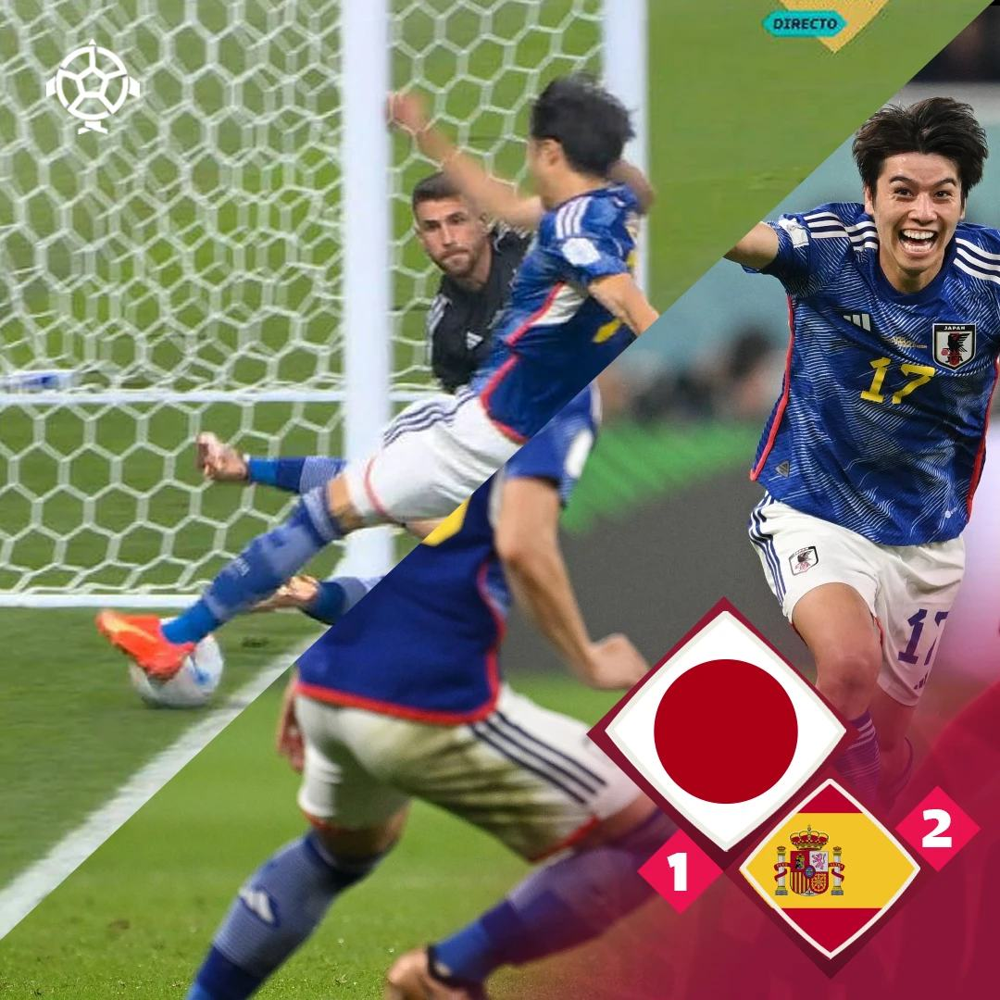
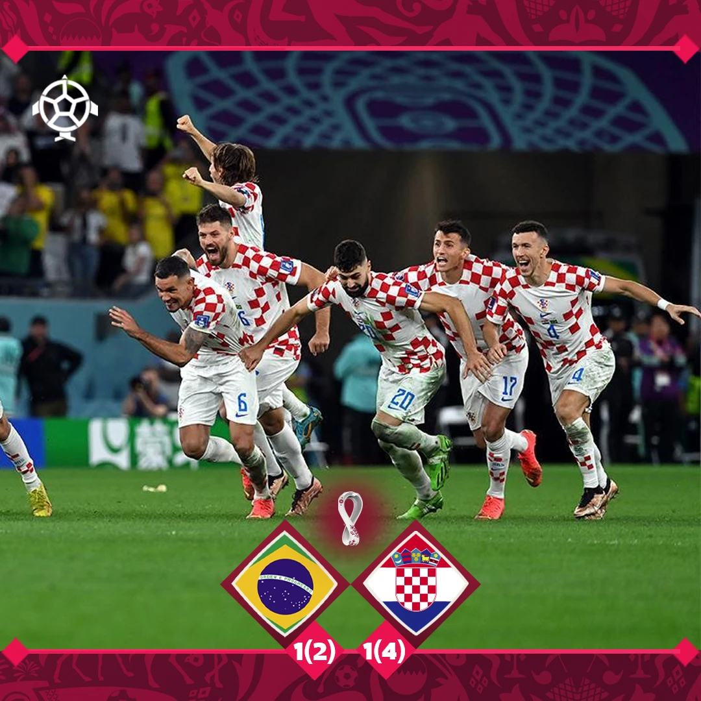
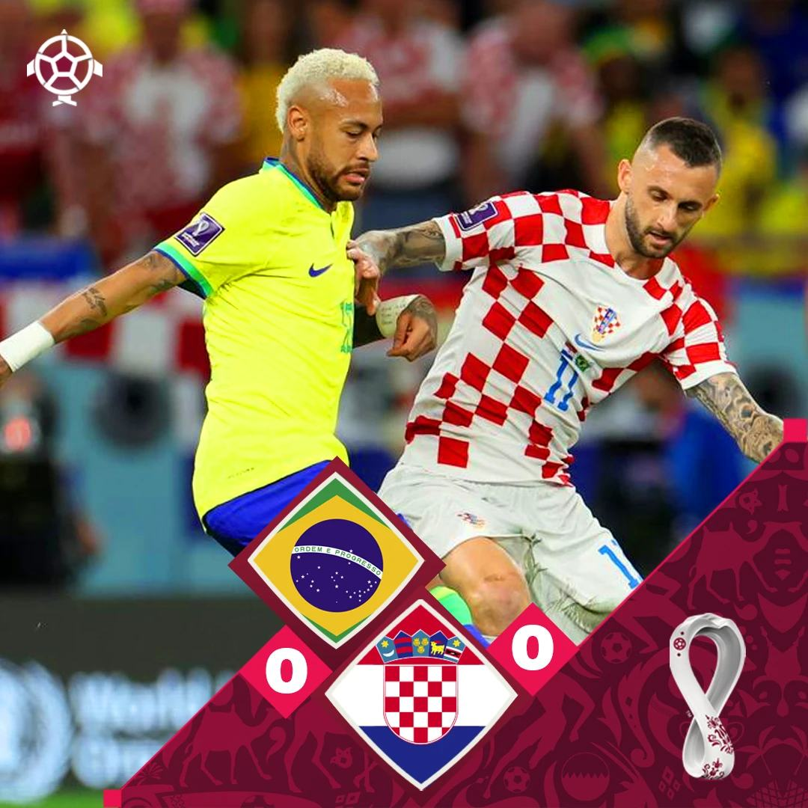
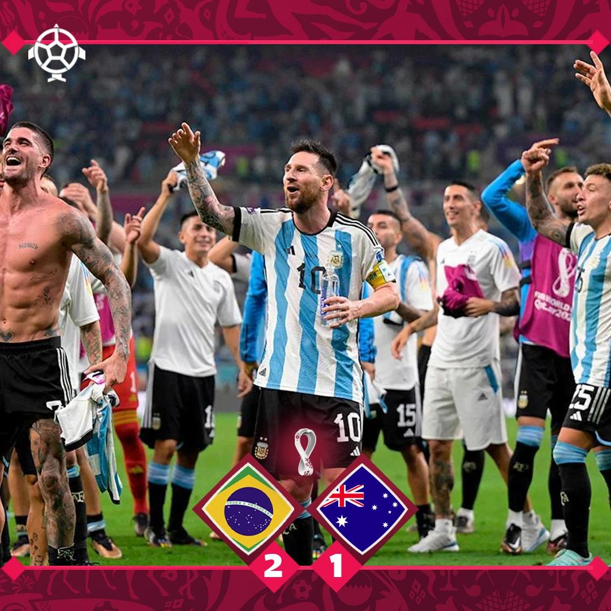
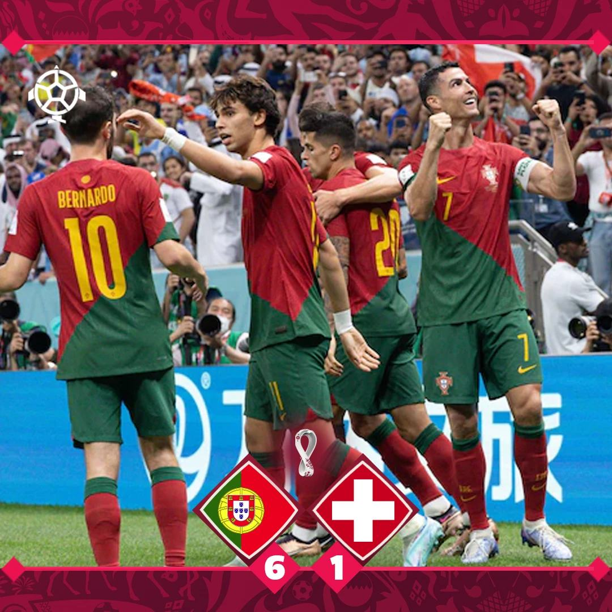

EP 09CH 04 · Branding and social
Qatar 2022World Cup social media coverage
- Client
- World Cup social media coverage
- My role
- Graphic design and social media system
- Season
- 2022
- Tools
- Photoshop, Illustrator
A social media content system for the FIFA World Cup Qatar 2022.
Groups, venues, line-ups, results and the final bracket, all in one maroon system.
Diamond-shaped flags, big scores and match photography, ready to publish on the day of each game.
37pieces
8venues
32national teams
Frames · 37













 Up next · EP 10Physo · Physical therapy centerBranding and social
Up next · EP 10Physo · Physical therapy centerBranding and social